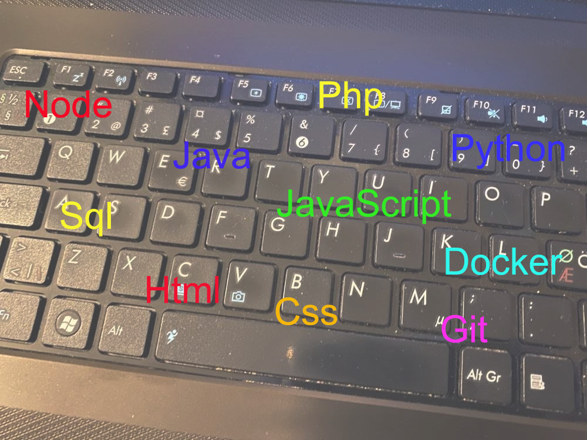
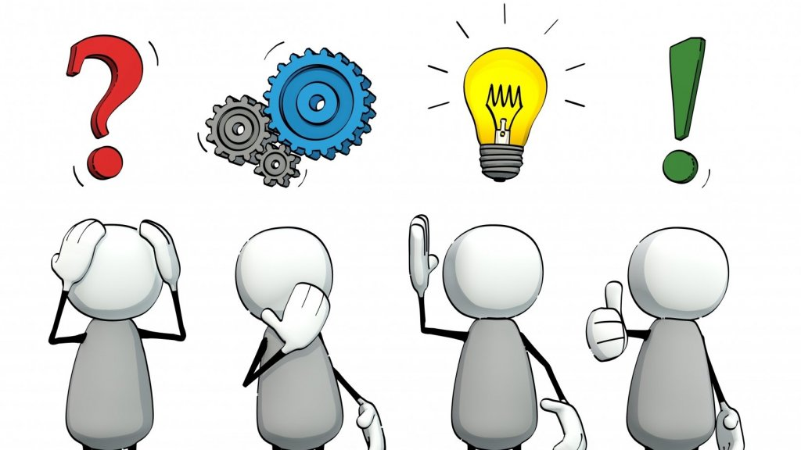

🔴
🔵
🟡
🟢
Tieto- ja viestintätekniikan opintoja 2022
Ohjelmointi 45osp, Ohjelmistokehittäjänä toimiminen 45osp
| Java | 🔵 | |
| Html5 / Css3 | 🟢 | |
| Git / GitHub | 🟡 | |
| JavaScript | 🔵 | |
| Docker | 🟡 | |
| React | 🔵 | |
| Node.js | 🔵 | |
| Express | 🔴 | |
| Axios | 🔴 | |
| SQL / NoSQL | 🔵 | |
| API | 🔵 | |
| Scrum-perusteet | 🔴 |
